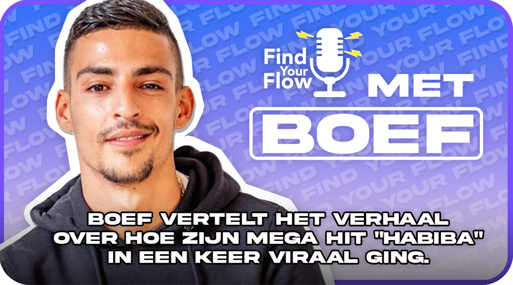
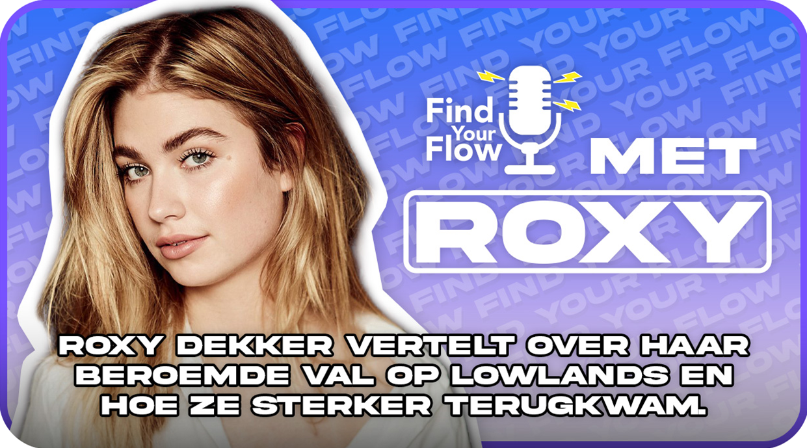
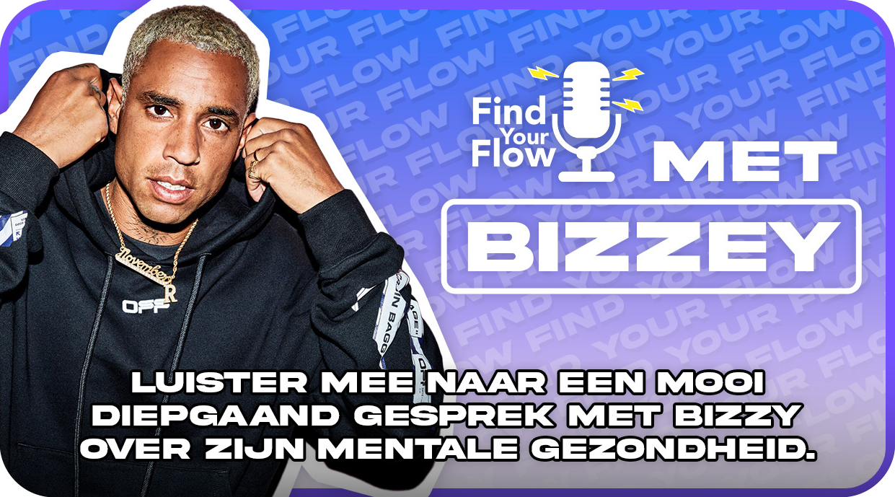
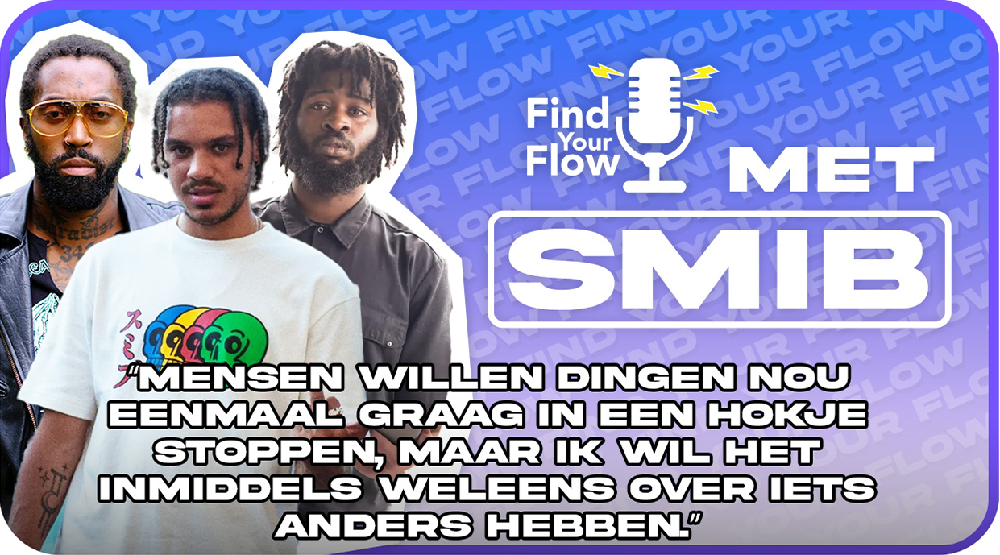
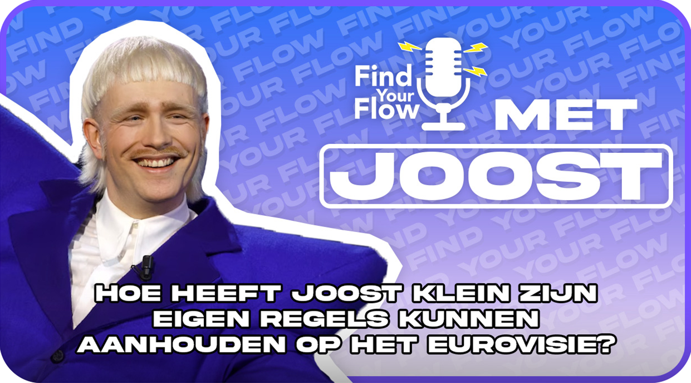

AFLEVERINGEN
-
Aflevering 1
Boef vertelt het verhaal over hoe zijn mega hit “Habiba” in een keer viraal ging.
-
Aflevering 2
Roxy Dekker vertelt over haar beroemde val op Lowlands en hoe ze sterker terugkwam.
-
Aflevering 3
Bizzey: “Toen heb ik ze ook bedankt. Voor het openen van mijn ogen. Dat ik nog heel veel heb om voor te leven.” Luister mee naar een mooi diepgaand gesprek met Bizzey over zijn mentale gezondheid.
-
Aflevering 4
GRGY: “Mensen willen dingen nou eenmaal graag in een hokje stoppen, maar ik wil het inmiddels weleens over iets anders hebben.”
-
aflevering 5

Froukje: "Er zijn talloze liedjes gemaakt over de liefde en liefdesverdriet en iets minder liedjes over vriendschap.", luister mee naar S10 en Froukje die praten over hun vriendschap.
-
aflevering 6
Hoe heeft Joost klein zijn eigen regels kunnen aanhouden op het Eurovisie, kom meer te weten in de podcast.